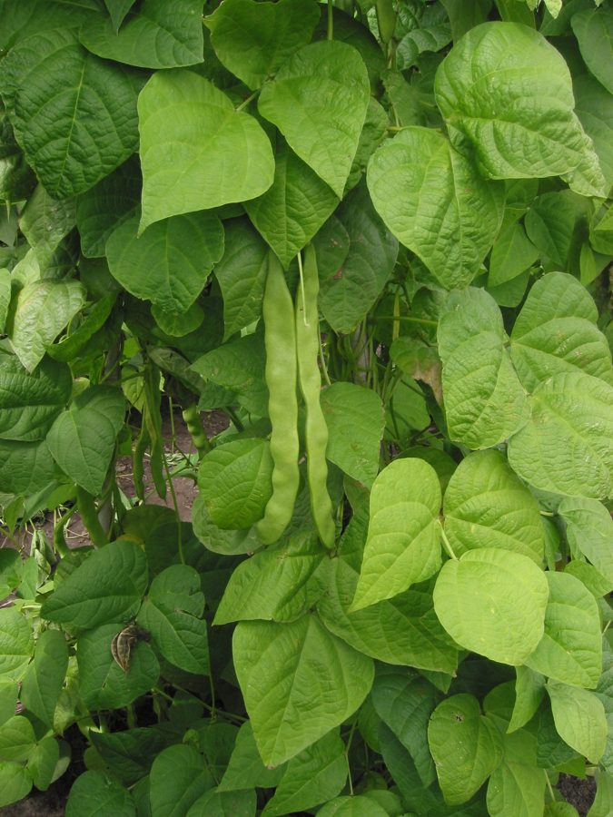

राजमाCommon Bean
Phaseolus vulgaris · Fabaceae · FLR-0274

- Scientific name वैज्ञानिक नाम
- Phaseolus vulgaris L.
- Family कुल
- Fabaceae
- Hindi हिंदी
- राजमा
- Local names स्थानीय नाम
- rajma, razma, common bean, kidney bean
- Status here यहाँ की स्थिति
- cultivated
- Movement आवागमन
- Resident, here all year
- Known from कहाँ दर्ज
- Others have published records from the wider Awadh–Purvanchal plain, none yet from Basti–Ayodhya अवध–पूर्वांचल से दूसरों के प्रकाशित अभिलेख, बस्ती–अयोध्या से अभी नहीं
- IUCN IUCN
- not evaluated
- Review समीक्षा
- audited and independently read
When to look कब देखें
Expected mainly in June, July, August, September, October, February, March. मुख्यतः जून, जुलाई, अगस्त, सितंबर, अक्टूबर, फ़रवरी, मार्च में अपेक्षित।
Uses and possibilities उपयोग और संभावनाएँ
Drawn from the documented uses in the profile below, where each is labelled traditional, current or a research lead. All uses →
Tell it apart from इनसे अलग पहचानें
राजमा / Common Bean
Phaseolus vulgaris L. — Fabaceae
राजमा — एक महत्वपूर्ण सेम जाति की दलहन फसल जो भारत और यूपी में अब व्यापक रूप से उगाई जाती है। यह एक झाड़ीदार या बेल वाला वार्षिक पौधा है जो 30 से 60 सेमी तक बढ़ता है। इसकी तीन पत्तियों वाली (trifoliate) पत्तियाँ होती हैं। फूल सफेद, गुलाबी, या बैंगनी रंग के होते हैं। फलियाँ लंबी और सीधी होती हैं जिनमें 6–8 गुर्दे जैसे दाने होते हैं जो सफेद, काले, लाल, या चित्रित रंग के हो सकते हैं। स्थानीय लोग इसे सूखा करके भूसी हटाते हैं और उबालकर मसाला वाली सब्जी ("राजमा-चावल") बनाते हैं जो बहुत पौष्टिक होती है। इसकी जड़ें नाइट्रोजन का स्थिरीकरण करके मिट्टी को समृद्ध करती हैं।
Quick Identification त्वरित पहचान
| Feature | Description |
|---|---|
| Form | Erect bushy or climbing annual herb (30–60 cm tall), with three-leaflet compound leaves |
| Leaves | Alternate, trifoliate; leaflets are ovate, 8–15 cm long, dark green, with entire margins and prominent veins |
| Flowers | Axillary clusters, papilionaceous, color variable (white, pink, purple, or bicolored), 1–2 cm long |
| Pods | Long, straight, cylindrical, 10–15 cm long, containing 6–8 seeds; mature pods are dry and brittle |
| Seeds | Kidney-shaped, 1–1.5 cm, color variable (white, red, black, or patterned); oily and starch-rich |
Field tip: A bushy herbaceous legume with three-leaflet compound leaves, papilionaceous flowers in clusters, and long dry pods containing distinctive kidney-shaped seeds of variable color.
Morphology आकारिकी
| Feature | Measurement |
|---|---|
| Plant height | 30–60 cm (dwarf), up to 2–3 m (climbing varieties) |
| Leaflet length | 8–15 cm |
| Leaflet width | 5–10 cm |
| Flower length | 1–2 cm |
| Pod length | 10–15 cm |
| Pod width | 1–1.5 cm |
| Seed length | 1–1.5 cm |
Root system: Taproot with lateral roots and prominent nodules containing nitrogen-fixing Rhizobium bacteria.
Inflorescence: Axillary racemes of 2–10 flowers; each flower is zygomorphic (butterfly-shaped) with a large standard, two wings, and a keel.
Associated Species / Interactions सहजीवी संबंध
- Nitrogen fixation: Root nodules host Rhizobium bacteria, enriching soils for subsequent crops
- Insect hosts: Primary host for the gram pod borer; also hosts leaf-eating beetles and beetles
- Pollinator: Self-pollinating; small bees occasionally visit flowers
- Intercropping: Often grown with rice or maize in crop rotation systems
- Legume host: Serves as a host for bruchid seed beetles during storage
Life Cycle / Phenology जीवन चक्र
- Sowing: Sown immediately after monsoon arrival (June–July) for Kharif or in autumn (October–November) for Rabi
- Germination: Rapid emergence within 7–10 days with adequate moisture
- Vegetative growth: Develops three leaflets and multiple stems through July–August or November–December
- Flowering: Small white to purple flowers bloom in terminal and axillary clusters in August–September or December–January
- Podding: Pods develop and mature within 25–30 days of flowering
- Harvest: Mature dry pods are harvested when brown and brittle in September–October or February–March
Pests and Diseases कीट और रोग
- Pod borer: Helicoverpa armigera larvae tunnel into developing pods and consume seeds
- Leaf spot: Fungal pathogens (Colletotrichum species) cause circular leaf spots in humid conditions
- Bean fly: Ophiomyia phaseoli larva tunnels in stems, causing wilting
- Rust: Uromyces fungus produces rust-colored pustules on leaf undersides in wet conditions
Agricultural / Human Relevance कृषि प्रासंगिकता
Protein-rich pulse and dietary staple.
- Rajma-Chawal: The dried seeds are soaked, cooked until soft, and seasoned with onions, tomatoes, and spices to make the iconic dish "rajma" served with rice across northern India
- Nutritional value: High in protein, fiber, and micronutrients; contains all essential amino acids when combined with grains
- Cultivars: Varieties sown in UP include Phule Anuradha, Ashoka, and local landraces
- Canning: Young pods are canned or frozen as "green beans" in commercial agriculture
Traditional and Ethnobotanical Use
- Winter protein: Dried rajma is a primary protein source in vegetarian households during winter months
- Festival food: Rajma is prepared for family gatherings and festivals across UP
- Seed saving: Farmers save seeds from the best plants for the next season
Cultivation Calendar
| Stage | Month(s) |
|---|---|
| Field preparation and sowing | June–July (Kharif); October–November (Rabi) |
| Vegetative growth | July–August or November–December |
| Flowering | August–September or December–January |
| Podding and maturation | September–October or January–February |
| Harvest | September–October or February–March |
Expected Locally स्थानीय रूप से अपेक्षित
Not a field record. Written from published accounts for eastern Uttar Pradesh. No confirmed local sighting yet — if you have seen it, that is what the atlas needs.
अभी तक स्थानीय पुष्टि नहीं। यह विवरण प्रकाशित स्रोतों से है, किसी अवलोकन से नहीं।
Phaseolus vulgaris is expected to be cultivated throughout Basti district as both a monsoon and winter pulse crop. Look for it in fields and home gardens from June through October or from October through March. The first local record would be a photograph with date and location.
Distribution वितरण
Global range: Native to Mexico; now cultivated globally as a staple legume crop.
In India: Grown throughout all states as both Kharif and Rabi crops; major producing states include Uttar Pradesh, Madhya Pradesh, and Rajasthan.
In Uttar Pradesh: Cultivated throughout the Indo-Gangetic plain in both seasons.
In Basti district / eastern UP: Cultivated resident; widely grown by farmers and in home gardens.
Research Questions शोध प्रश्न
- How does the nitrogen-fixation rate of rajma differ between sole cropping and intercropping with rice or maize? / क्या धान या मक्के के साथ राजमे की अंतरफसल में नाइट्रोजन स्थिरीकरण अलग होता है?
- Which local varieties of rajma yield the highest protein content and store the longest without pest infestation?
- Can farmers distinguish between seed from a high-yield rajma plant and a low-yield plant by visual appearance?
- What is the optimal soil moisture level for pod development in rajma during the critical podding stage? / राजमे की फली बनने की अवस्था में सर्वोत्तम मिट्टी की नमी कितनी होनी चाहिए?
- How many grains does one pod typically contain, and does the number vary by variety or growing season?
Similar Species मिलती-जुलती प्रजातियाँ
| Species | Key Difference | हिंदी | |
|---|---|---|---|
| Vigna unguiculata ([[cowpea\ | Cowpea]] [FLR-0271]) | Leaflets are narrower; pods are round and smooth; seeds are smaller and comma-shaped | लोबिया — पतली पत्तियाँ, छोटे चन्द्र आकार के दाने |
| Cicer arietinum ([[chickpea\ | Chickpea]] [FLR-0056]) | Much smaller bushy plant; leaflets are tiny and serrated; pods are swollen and inflated | चना — बहुत छोटा पौधा, खुरदुरी पत्तियाँ, गोल फलियाँ |
| Cajanus cajan ([[pigeon_pea\ | Pigeon Pea]] [FLR-0055]) | Grows as a tall woody shrub; leaflets are narrower; seeds are smaller and round | अरहर — लंबा झाड़ी, पतली पत्तियाँ, गोल दाने |
Field rule: A legume with three-leaflet compound leaves, papilionaceous flowers in clusters, and long straight pods containing kidney-shaped seeds of variable color distinguishes common bean.
Taxonomy & Classification वर्गीकरण
Original description. Carl Linnaeus described Common Bean as Phaseolus vulgaris in 1753 in Species Plantarum. The genus name Phaseolus is derived from the Greek phaselos, a bean plant mentioned by Theophrastus. The specific epithet vulgaris means "common."
Subspecies. Monotypic; agricultural varieties are classified by seed color and plant habit (e.g. dwarf and climbing types).
Family and order placement. Order Fabales, family Fabaceae, subfamily Faboideae, tribe Phaseoleae.
Phylogenetic notes. Phaseolus vulgaris is the only widely cultivated species in the genus, domesticated in Mesoamerica 7,000–10,000 years ago and spread globally via Spanish colonization.
IUCN status rationale. Not evaluated. As a globally cultivated staple crop with massive populations, it faces no conservation threats.
Photo Gallery फोटो गैलरी
No photos yet — add field photos to media/species/common_bean/ and run node scripts/sync_photos.js.
References संदर्भ
- Linnaeus, C. (1753). Species Plantarum. Laurentii Salvii, Holmiae, Vol. 2, p. 1024. [original description]
- Indian Council of Agricultural Research (2021). Handbook of Legume Crops. ICAR, New Delhi.
- Indian Institute of Pulses Research (2020). Package of Practices for Pulses in Indo-Gangetic Plains. IIPR, Kanpur.
- Smartt, J. (1990). Grain Legumes: Evolution and Genetic Resources. Cambridge University Press.
- Botanical Survey of India (2015). State Flora Series: Flora of Uttar Pradesh. BSI, Kolkata.
- GBIF Occurrence Data — Phaseolus vulgaris, India (2024–2026).
Source file: species/flora/crops/common_bean.md